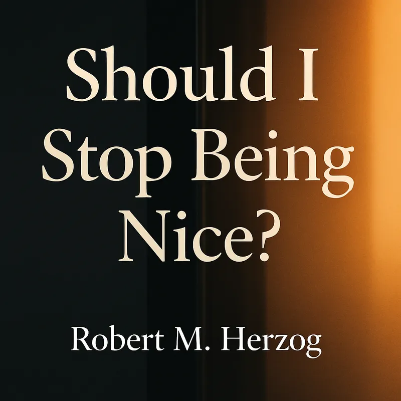

Essay · September 18, 2025
Should We Stop Being Nice?
A question for our times.

I was walking with my family (5 of us) to a nearby restaurant for lunch, on one of those frigid NY days. As we got to the restaurant, three young women approached. Although we were “there first” I followed old instincts and held the door open for them. As the last woman went through, she did not hold the door for me, letting it close in my face, without a backward glance. It was simply rude.
It wasn’t earth shaking, but as a symbols of our time, it has got me wondering — Should I stop being nice?
Being nice does not feel like a quality reflecting our times. Needless to recount, but on the big stage, the attitudes of Trump, Republicans, and their followers come to mind. As they attack immigrants — legal or otherwise, law abiding and contributors to their communities and their families — they are just plain mean. As they slash budgets for others while enriching themselves, without pause or reflection for the real impact on lives — they are just plain mean. As they blame DEI for California wild fires, or plane crashes, or desiccate aid programs for hungry children around the world, I can only wonder at the depth of their indifferent cruelty towards those who suffer.
Every now and then I’ll read an editorial or OpEd in the Wall Street Journal. What astonishes me is the lens through which they view — and distort — — the same events, people, and policies that I see. Their interpretations run to callous disregard for vast swaths of people, as they run rampant with conspiracy and ideological theories that dismiss, say, the positive impact and good intentions of anything Joe Biden touched, of any program or policy that uses government to help people, as anything related to the clear evidence for climate change is drowned under the waters of economic self-interest for their oil and gas brethren.
They ain’t nice.
So nice isn’t being rewarded today. The Jan. 6th people who bashed policemen and threatened the lives of Congress people weren’t nice. And now they’ve been rewarded. Elon Musk’s embrace of fascist tropes isn’t nice. And no doubt his wealth will increase under Trump’s watch. Being nice, or being kind, isn’t done for its own reward, but rather to express a quality of how to live. It’s not transactional, which is the opposite of the prevailing approach of Trump and his band of humanity thieves, and their “what’s-in-it-for-me” ideology. And what about those who profess to be Christian, to want to spread those words. A central part of Jesus’s persona and message was kindness. Let him who is without sin…, love thy neighbor…, heal the sick, feed the hungry. Forgive. Ranting about putting bibles in the classroom is a lot easier than actually abiding by the words and the examples.
The filter down of indifferent affronts bordering on cruelty extends to everyday life. How often have you been disconnected from a so-called customer service call? That process is a feature, not a bug, as are the endless wait times and multiple responses required to engage a human in a company or service provider. The goal is to get you to give up, using no-cost automated processes to drive you away before you can lodge a legitimate issue or cost them anything. It ain’t nice.
I have a friend who is excessively polite. And seems to take delight when people don’t return the acts, however gracious or decent they are, who respond by ignoring them and pursuing their own form of immediate gratification. Taking a perverse pleasure in affirming the true sense of human nature.
But still. Every now and then someone does hold a door for me. Or offers a seat to my wife on the subway. Or goes out of their way in a store to be helpful. These acts display the innate decency that is also part of our souls, perhaps when nurtured, or more likely not corrupted, by the venality and meanness we too often encounter. Those moments maintain both a faith in fellow persons and instincts to be nice, not mean, to provide assistance, not run the door, even to forgive rather than seek to punish.
I can’t say I understand the meanness of those who have so much wealth towards those who have less. To those whose country and environment have given them such high levels of creature comfort and worldly power, who rather than return those favors would prefer to accrue more, in a zero-sum gain which means they are taking from others, taking their food and shelter, their freedom, their humanity. I want to cry out to the ICE people and their enablers — don’t do it! Don’t be good 1930s Germans, don’t follow orders, don’t destroy lives of fellow humans who only want the same things you do for yourselves and family.
In other words, be nice. Be kind, not in the expectation of reward, but for its innate virtue. And embed that value.
So what do I do, when decency is pummeled and mean actors are ascendant? Do I hold the door next time, or walk in and let it close? Do I ignore the horrors being perpetrated and try to live my own life as best I can, or do I try to speak out at god knows what risks in an increasingly parlous environment? Let me tell you, I choose to speak.
Do you?